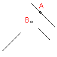

|
IntersectWith Method |
Gets the points where one object intersects another object in the drawing.
Signature
RetVal = object.IntersectWith(IntersectObject, ExtendOption)
Object
All Drawing Objects (Except Pviewport and PolygonMesh)
The object this method applies to.
IntersectObject
Object, input-only;
The object can be one of All Drawing Objects.
ExtendOption
AcExtendOption enum; input-only
This option specifies if none, one or both, of the objects are to be extended in order to attempt an intersection.
acExtendNone |
Does not extend either object. |
acExtendThisEntity |
Extends the base object. |
acExtendOtherEntity |
Extends the object passed as an argument. |
acExtendBoth |
Extends both objects. |
RetVal
Variant (array of doubles)
The array of points where one object intersects another object in the drawing.
Remarks
If the two objects do not intersect, no data is returned. You can request the point of intersection that would occur if one or both of the objects were extended to meet the other. For example, in the following illustration, Line1 is the base object from which this method was called and line3 is the object passed as a parameter. If the ExtendOption passed is acExtendThisEntity, point A is returned as the point where line1 would intersect line3 if line1 were extended. If the ExtendOption is acExtendOtherEntity, no data is returned because even if line3 were extended, it would not intersect line1.
If the intersection type is acExtendBothEntities and line2 is passed as the parameter entity, point B is returned. If the ExtendOption is acExtendNone and line2 is the parameter entity, no data is returned.
 |
|
| line1 |
| Comments? |